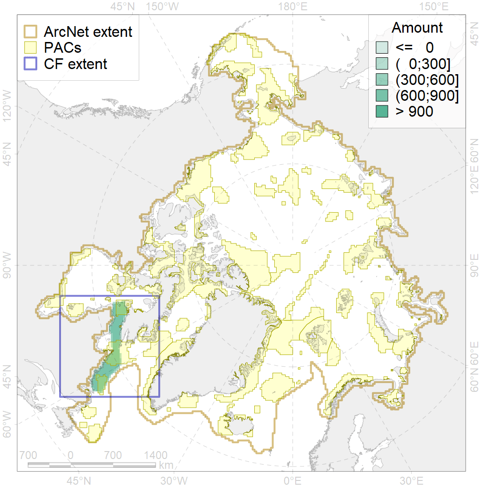
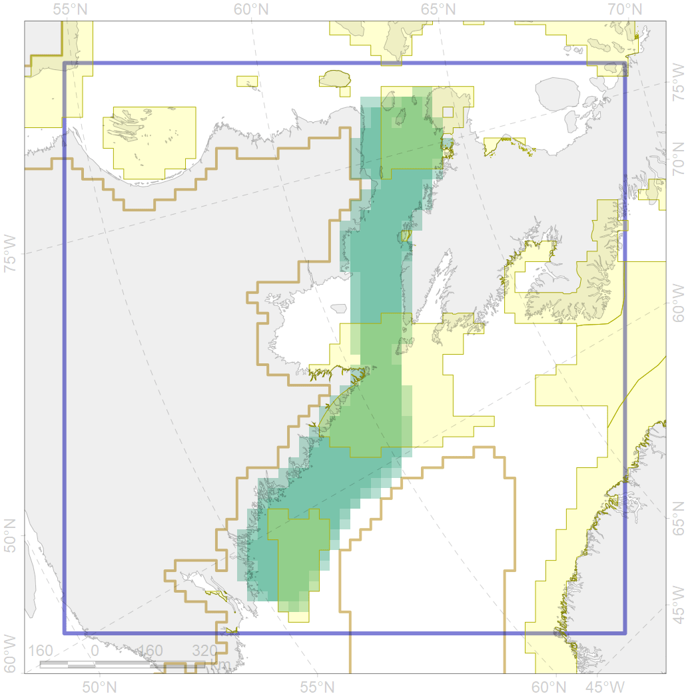

5030

| CF code | 5030 |
| CF name | Beluga of the Ungava Bay winter distribution |
| Time Period | not specified |
| Source(s) | GROM |
| Seasonality | November-May |
| Depth Horizon | 0-1000 |
| Methodology | Aerial surveys |
| Use Restrictions | |
| Author Name | Filatova |
| Notes | |
| Scenario’s Target | 0.12 |
| Target Achievement | 0.482 (Scenario: 401.8%) |
| PAC | Share of the Total Amount within the PAC | Share of the Target Achievement for the ArcNet | PAC’s Contribution to the Target Achievement |
|---|---|---|---|
| 73 | 11.4%11.5% | 84.8%85.1% | 21.1%21.2% |
| 75 | 0.1%0.1% | 0.5%0.6% | 0.1%0.2% |
| 76 | 22.3%22.4% | 174.4%175.7% | 43.4%43.7% |
| 77 | 12.6% | 95.0% | 23.6% |
| inner | 46.4%46.6% | 354.6%356.4% | 88.3%88.7% |
| outer | 53.6%55.6% | 47.1%62.6% | 11.7%15.6% |
| † supplement values are for area consistence whereas principal values are for Accenter compatible gridded stats |